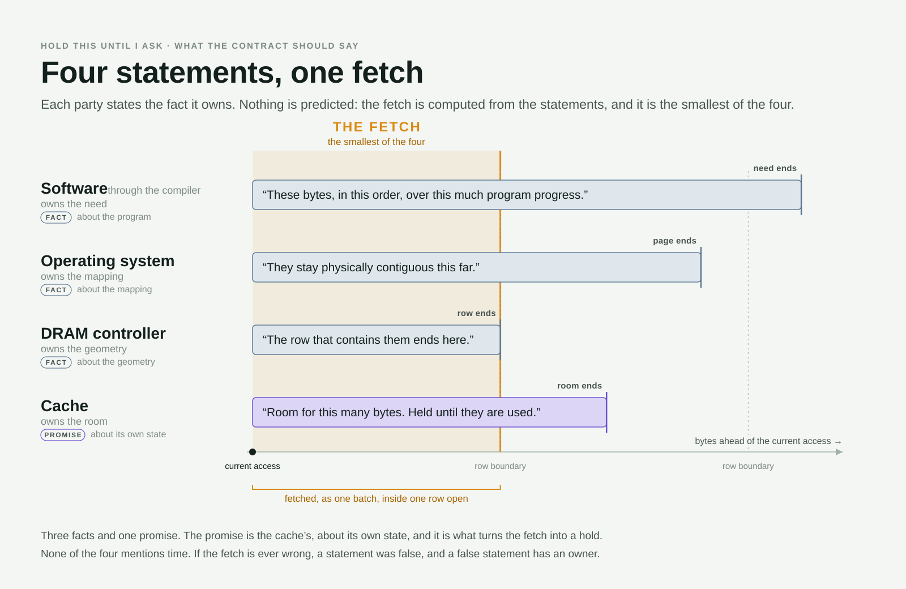

Hardware–software contracts · essay five
Hold This Until I Ask
A follow-up to “A Brief History of Computing,” “You Are Building a CPU, Not a Casino,” “Synchronization Is Evil,” and “A Client Core in a Server Socket.” On the one sentence the memory system has never been able to say, and what it has cost that it cannot.
The earlier essays in this series each took one layer of the machine and found the same thing in it. A decision that was right when it was made. Kept after its reason expired. Defended afterwards on grounds it was never built for.
It is time to put the layers back together, because they are not four problems. They are one chain, and each link was shaped by the one before it.
The first essay found the contract: an interface that promises software a machine it no longer has. It keeps the promise at the instruction set, where keeping it costs the most. At memory the promise reads flat and uniform. That was true of the core store it was written for, and false of every memory since.
Because the contract hid the structure, the machine needed a cache to make the hierarchy disappear. A cache can only do that by guessing: one guess to bring a line in, a second to throw it out, with the one party that could know never asked.
Because the cache guessed, latency became unpredictable, and so the core learned to guess as well. The second essay priced that bet.
Because the core was scored on how well it hid one thread’s latency, the fourth essay found a client core in a server socket. When the socket needed throughput, it got the only thing that scoreboard could produce: the same core, replicated. Replication spent the slack every earlier link had lived on.
The chain ends at DRAM, and not by accident. Every layer above it could hide its guesses in the slack of the layer beneath. DRAM has no layer beneath. It is the first place where the cost of every link is summed in one currency and cannot be passed further down. That makes it the only honest ledger the machine keeps. This essay is about reading it.
One core, and a memory with nothing to do
Start where the field started, with one core and one memory, and notice that neither can keep the other busy.
A core’s demand on DRAM is not set by how fast it computes. It is set by how many independent misses it can keep in flight, and that number is small. A handful, bounded by the queues that track them and by the dependencies that make most loads wait for the ones before. Each miss takes a full round trip of hundreds of cycles.
So one core, even a deep, speculative one, presents DRAM with a trickle of requests separated by long waits. The memory sits idle between them. Meanwhile the core is idle too, stalled on the very round trips it cannot overlap. Bandwidth, the quantity DRAM has to sell, is a quantity a single core cannot spend. The core is latency-bound and the memory is under-used, and both facts are the same fact seen from either end.
The field’s answer was to add cores. Mainstream multicore arrived for a different reason, the power wall, but it worked for this one. If one core could not fill the memory, many would, and the throughput-computing designs of the early 2000s said as much explicitly. The idle capacity was real, and it was absorbed.
What nobody designed was where the absorption would stop. Core count rides lithography, and lithography doubled on schedule. Bandwidth rides pins and packaging, which did not. Channel count and data rate did grow, and between them they kept bandwidth per core from collapsing. But the share per core did shrink.
Each core’s appetite grew in the meantime, through wider issue and wider vectors, until one instruction could ask for an entire cache line. The bandwidth available to a single instruction, on a single core, is a fraction of what it was.
The result is the mirror image of where we began. DRAM is no longer idle; it is the thing everyone waits for. And the idleness did not disappear. It moved into the cores, where a hundred of them sit stalled on a memory that is finally, fully busy.
It is worth being precise about what happened to the bottleneck. The loose version of the story, that it moved from latency to bandwidth, is wrong in a way that matters. It stacked. Each core is still latency-bound, exactly as it was alone; nothing about a neighbor’s existence shortens a round trip. What multicore added was a ceiling on top: a bandwidth limit at the scope of the whole socket, which no single core can see and no single core can reach.
Measure one application, tuned to the bone, and you will find a latency problem, because on its own it never comes near the ceiling. Load the socket and the aggregate finds the ceiling at once. Both measurements are right. They are measurements of different scopes, and the field’s instruments were built for the first one.
The ceiling, too, is lower than it looks. The theoretical figure on a memory controller’s datasheet assumes a bus carrying data every cycle, which no real access pattern permits. Rows must be opened and closed, refresh must run, reads and writes must turn around. A system reading at three quarters of the theoretical number is not cruising with headroom. It is at the wall, and the last stretch before it is where everything degrades at once.
Both points were sharpened in an exchange with Lewis Carroll of AMD under the second essay. He supplied the measured ceiling: just under eighty percent of theoretical on a current EPYC socket in its default mode, about eighty-five in the best streaming configuration. And he put the last point better than I had: as you approach the ceiling, bad things happen.
The cache’s two guesses
Between the cores and the memory sits the cache, and the cache is where the contract does its damage.
The contract promises memory that is flat and uniform. Memory is neither. There is a hierarchy, and within each layer of it there is structure. DRAM is banked, paged, and not even addressable by the byte, since a column is the smallest thing it can deliver.
The promise is kept in the one sense that matters to correctness: a load returns the right bytes. It is broken in the sense that matters to everything else. The cost of a load is not a property of its address. It is a property of the sequence: whether the row is open, whether the bank is busy, what came before.
A flat model has no way to express that. So the relation between accesses, the one thing DRAM’s cost depends on, is exactly what the interface throws away. The lie is about how, never about what. And it is told at the instruction set, where the compiler, the one party equipped to use the truth, cannot hear it.
What a flat interface leaves the cache is guesswork. A prefetch says, in effect, “I think I will need this.” It cannot say “hold this until I ask,” because the machine has no way to say it. The cache has no word for a reservation. It installs lines, and keeps or discards them by another prediction, its guess at which lines will not be reused. One guess brings the line in, a second throws it out, and the one party that could know when the data will be wanted is never consulted.
Meanwhile, in a full cache, every speculative line takes the place of something else. Whether that something would have hit is a cost the machine does not even count. Software can mark its own accesses as not worth keeping, and an operating system can fence off whole ways for a tenant. Neither can tell the hardware’s guesses what not to displace. A bet, however well placed, is not a reservation. The only one who could make a reservation is the program, which is never asked.
That gives the bet a third outcome the ledger does not show. A guessed line is installed before the program asks for it, and nothing promises it will still be there when the program does. Until it is used it competes with everything else: demand traffic, other guesses, and on a shared chip a neighbor’s working set the core cannot see. If it is evicted first, the guess was right and still lost. The line is paid for twice, once on the bet and again on demand. And something, possibly live, was displaced to make room.
Deeper lookahead makes this worse, not better. Every cycle of lead bought against latency is a cycle the line must survive unconsumed. Too shallow and the bet arrives late; too deep and it is swept away before it is wanted. That window narrows exactly when the machine is busiest, when latency stretches and demands more lead while a contended cache grants less. A right guess, it turns out, is not the same as a won bet.
The size of this is hard to see, and the reason it is hard to see is itself the point. A recent characterization of Google’s production traces found, in simulation, a second-level cache forty-four percent occupied by prefetched lines not yet hit, against thirty-eight percent for data.1 The temptation is to read that as waste. It is not, or not yet. It is a snapshot, and any lookahead must carry inventory: lines in the window between install and use.
Part of that occupancy is the working stock of latency hiding and would be there with a perfect predictor. The rest is dead stock, lines that will never be wanted, and spoilage, lines that were wanted and were evicted first. A snapshot cannot separate the three. Only following each line to its fate can.
The standard metric, prefetch accuracy, is defined so as not to. A line evicted before use is booked as a wrong guess whether or not it was right. When retention failures are filed as prediction failures, the remedy keeps coming out as a better predictor. The field has spent decades on better predictors.
The ledger that would settle it has three bins per installed line: consumed, evicted and never wanted, evicted and wanted later. The third is the number nobody publishes. It has a debit column too, which the usual pair of metrics omits. Coverage counts the hits a prefetcher gains, and nothing counts the hits it takes away.
A displaced hit costs more than the capacity it gave up. The victim was going to hit; now it misses. If it was dirty it is written back first, in eviction order rather than row order. One guess becomes two DRAM transactions, the guess and the refetch, and under load each is a row open on a contended channel.
Both bins and the debit are future facts, one about the installed line and one about its victim. Neither the predictor nor the cache has either fact. For regular code, the program has both.
And the program has no way to act on them. What software has today comes to three things, none of them control. Advisory hints, which the hardware may ignore. Coarse partitioning, set by the operating system per tenant, which rations the cache but cannot direct it. And contortion: tiling, blocking, and layouts chosen so that the hardware’s guesses come out right.
Contortion is software rewriting itself around a machine it is not allowed to speak to. It is also tuned for a cache that becomes half its size the moment a neighbor arrives.
The design space has both ends occupied and nothing between. Conventional caches give software no control. Scratchpads give it total control and no help, the memory-side Itanium, where every placement and timing decision moves to the programmer. The party with the facts has no authority, and the party with the authority has no facts.
The manycore die
Put the old contract on a manycore die and every one of these failures grows with the core count. A guess that once displaced the guessing core’s own data now displaces a neighbor’s. As cores are added, the probability approaches one, so the cost of the bet falls almost entirely on someone who did not place it.
The line’s own chances fall at the same time. It must survive the installations of every core on the chip, not only its own. So the window between fetched and consumed closes as the chip fills, while the prefetcher’s lead was tuned for a cache it had to itself.
Each line lost is fetched twice. The refetches lengthen the queue at memory. Longer latency calls for deeper lookahead, and deeper lookahead displaces more. Adding cores therefore does two things at once: it spends the bandwidth, and it lowers the share of it that carries anything useful. The ceiling arrives sooner than the core count predicts, and the last stretch toward it is steep.
The loop deserves its own name, because it is the mechanism under everything above. Under the old contract there is no back-pressure at the core. The cache never refuses a line and the controller never refuses a request. The only signal that reaches the core is latency, and it reaches the core late.
A machine built to hide latency answers a longer wait by running further ahead: more lines in flight, more guesses installed, more of them lost. The one signal that should slow it down makes it push harder. That is a positive feedback loop, and a positive feedback loop on a shared, saturated resource is thrashing. It is not a risk of this design. It is the design, waiting for load, and under load it arrives.
Shipping prefetchers damp the loop by throttling on their own accuracy.4 But accuracy is a lagging, local proxy. It falls only after the lines are already lost, so the throttle arrives after the damage. And it reads a neighbor’s pressure as its own mistake.
Put a name on who pays. On a shared cache with N tenants, nearly every line a guess displaces belongs to someone else: the victim is a neighbor (N−1)/N of the time. So a noisy tenant does more than slow the others down. It raises the cost of their work.
Each displaced line is fetched again, and the neighbor’s transfers per unit of work go up for a reason that has nothing to do with its program. The same job costs the system more bandwidth because of who happens to be running beside it. No counter on a shipping part reports this. In the simulation it is the number of hits taken away, and that number is a sum over neighbors.
The monitoring that does exist makes it worse. Bandwidth is accounted by who issued the request, so the victim’s refetches are charged to the victim. Under load, the tenant whose consumption rises is the one being damaged, and a system that throttles by consumption throttles the wrong tenant. The ledger is not only incomplete. It is signed by the wrong party.
Later designs changed the shape of the cache without changing any of this. Making the last-level cache a victim cache, holding what the private caches reject rather than a copy of what they hold, fixed something real. Inclusion had let one core’s insertion back-invalidate another core’s live lines, the most direct cross-core displacement there was, and it duplicated capacity.
But the guesses did not vanish; they moved down. A victim cache is built from what the private caches threw out, and they throw out every unused guess. So the dead stock is promoted to the shared level by construction, where it displaces victims that would have hit. Designs that filter the victim stream do it with a dead-block predictor, one more guess.
And since modern applications do not fit in a private cache, the shared level is where the working set lives, which is exactly where residence shrinks with the core count. The organization changed; the contract did not. Any cache run on the old contract fills with guesses and empties by guesses, whatever its topology.
The only honest ledger
It is tempting to call this a pyramid scheme, and the accounting invites it. Each core books a gain the system never earned. The latency it hid was bandwidth taken from a neighbor; the line it installed was a neighbor’s line displaced. The loss is booked nowhere, so the sum of the parts’ gains exceeds the whole. The scheme was solvent while the memory had slack, the way such schemes begin as legitimate businesses. It kept paying at the old rate after the earnings stopped.
But a pyramid scheme is zero-sum: what the late members lose, the early ones keep. This is worse. The transfer destroys value in the act. The guessed line was redundant or wrong; the displaced line is fetched twice; every one of those fetches opened a row. The shortfall is not covered from anyone’s principal. It is paid in joules, the one currency that leaves the system entirely, and the books balance only if heat is counted as earnings. Nobody gains.
That is also why it persists. A fraud ends when the victims find out, because someone has been cheated of something they can see. Here no one has. The bill is paid at the system level, where every tenant is a little slower and every socket a little hotter. It is almost invisible at the core level, where the only ledger anyone keeps shows a gain.
The party that pays cannot trace the charge, and the party that could stop it never sees one. Nothing forces a correction. There is no collapse, only a bill that rises a little each generation, which is exactly what evolution, left to itself, leaves in place of a design.
The module joins the family
The memory module itself belongs in this family, and it is the member least often suspected. A DIMM gangs its dies: one command opens the same row in the same bank on every die at once, and a cache line is striped across all of them.
The arrangement is a fossil. Early DRAM chips were one bit wide, so a word needed one chip per bit. The gang has been carried through every module generation since, acquiring new justifications along the way. The latest is that striping is what lets error correction survive a dead die.
What the gang does under load is charge every transfer its full width, whatever the transfer needs. A line that could have come from one die engages ten. That costs ten activations, and leaves a tenth as many banks free to serve anyone else.
With one flow draining each row to the end, the gang costs nothing; that is the single-core case it was built for. With many flows interleaving, rows close before they are drained, and the cost rises toward the number of dies in the gang. The core did not choose this and cannot see it. The greed, this time, is in the commons rather than the citizen.
It is the supply-side half of the problem. No contract between core and cache can fix it, and it cannot be fixed without one, because only a declared batch size tells the controller how many dies a transfer should engage.
NVIDIA has already taken the supply-side step. Grace replaced the DIMM with thirty-two narrow LPDDR5X channels, each with its own command bus. It delivers around ninety percent of its rated bandwidth with every core active, at what NVIDIA puts at an eighth of the power per byte of eight-channel DDR5. Vera continues the approach.2 NVIDIA did not have to ask anyone’s permission, because no binary could tell the DIMM was gone.
Evolution, not design
Step back from the chain and a single pattern runs through every link. A trait arrives for a reason. The reason expires. Compatibility keeps the trait. Then the trait acquires a new justification, which makes it look designed: the gang has error correction, speculation has the benchmark, the flat model has portability. That is why each one is so hard to argue against. Its defenders cite the current use, never the origin, and the current use is real.
Multicore is the clearest case because it is the most recent. A great deal was designed above the core: the uncore, the channels, the mesh, the larger shared cache, and later the rationing knobs. All of it is supply and rationing. What was never designed is demand: what a core asks of shared memory, and how. That was inherited unchanged from the single-core machine.
Intel’s first dual-core part was two single-core designs sharing a bus. Everything shared was added afterwards, as each symptom appeared. Even the throughput-first designs that came later changed the number and size of the cores and left what a core says to memory exactly as it was. Multicore was scaled, not designed. Each step was locally rational, and none reopened the contract.
Evolution is good at exactly this. It selects for running yesterday’s binaries faster on yesterday’s scoreboard, so it improves parts and freezes interfaces. Every problem in this essay sits at an interface. Reopening one makes things worse before better, across several parties at once, and that is the step evolution does not take on its own.
It is taken when one party owns both sides of the interface and the change is invisible above it. That is how the supply-side step got taken. The wider step, on the demand side, moves that line up one level: from invisible above the instruction set to invisible above the source. The price is a recompile, which the market has already shown it will pay.
There is an irony in how old the missing piece is. The rule that a shared resource must be admitted to rather than thrashed is Denning’s working-set principle.3 The industry did not ignore it. It made it the standard solution in the one place it could be applied: the operating system, which had an interface to apply it at. Page faults were visible, processes could be admitted or suspended, and thrashing was solved there within a few years of being named.
One level down, the same industry, often the same people, built a cache that no party could admit or refuse, because the contract made it invisible. Then they spent fifty years on better guessing instead. The result was known. It had no interface to stand in. Knowledge failed to cross a boundary, which is this essay’s thesis, inside the discipline itself.
It is worth saying what kind of fault this is, because it is not the usual one. In a true commons, each herder keeps the gain and shares the cost, and nobody owns the whole. Here one designer builds every citizen and the pasture. The cost could have been internalized at design time, and it was not, because cores are graded one at a time.
The greedy core was the correct design for an idle memory, where taking the locally best step was globally harmless. Saturation coupled it to its neighbors, and nothing in the core changed. The virtue now required of it is not restraint, which it cannot exercise, since it cannot see its neighbors. It is honesty: to state its true need. That costs it nothing, since the guesses that hurt the others were worthless to the core as well.
What the contract should say
The remedy has the same shape at every link: make the cost proportional to the need, which requires the need to be stated. At the memory system the instruction is three words long. Do not guess. Prove, and batch.
The two halves map onto the distinction the second essay turned on. Prove settles existence: fetch only what must be fetched. Batch is order: arrange the necessary fetches so that they share a row open. Order is free and existence is not. And the rule has to be “do not guess” rather than “do not guess wrong,” because wrongness is known only afterwards and no policy can select on it.
The guess is made today by the one layer that knows neither of the two things that matter. Need is known above, in the software. Cost is known below, in the controller, which sees which rows are open and which banks are busy. The prefetcher sits between them, inferring need from address history and blind to geometry. Its idea of “near” is the next line, while DRAM’s is the same open row.
A proof, in this setting, is a set of statements, each made by the party that owns the fact. Software, through the compiler, states which bytes it will need, in what order, over how much program progress. The operating system states how far those addresses stay physically contiguous, because the compiler names virtual addresses and rows are physical. The controller states where the row containing them ends, which is static geometry and needs no knowledge of current traffic. The cache states how many outstanding bytes it has room for, and promises to hold them until they are used.

The fetch is the smallest of the four. Nothing in it is predicted; it is computed from declarations. If it is ever wrong, a declaration was false, and a false declaration has an owner. A misprediction has none.
Two features of the statements matter more than they look. The first is that none of them mentions time. The compiler knows order and distance in program terms, the next so many iterations, before this loop exits. It does not know cycles, and asking it for cycles was Itanium’s mistake. The cache does not need cycles either, because “until it is used” is an event it can observe for itself. Stated this way nobody predicts timing, and the window in which a right guess is lost does not exist.
The second is that the cache’s statement is the only promise among facts, and it changes the cache’s job. A declared need gives each line a known lifetime. So a line is released when its use ends, rather than when recency happens to rank it last. Eviction stops being a guess. Recency-based replacement is a prediction from history; a lifetime is a fact from the party that will end it.
The principle under both features is that interfaces should pass facts, not decisions. Itanium moved the decision without moving the knowledge. It handed the compiler scheduling choices that depend on runtime facts and sent nothing back up at runtime to inform them. Today’s hardware does the mirror image, guessing program structure from a window of a few hundred instructions. Both are one party deciding with half the facts.
When each layer declares what it owns and the decision is computed where the facts meet, the layers stay separate. They stop being silent. Geometry can be stated at runtime rather than baked into a binary, so nothing couples a program to one DRAM generation.
The same statements are flow control, in the proper sense of the term. A hold is a credit the cache grants against room it actually has. So pressure reaches the core before a byte moves, and from the party that owns the capacity. Where the cache cannot grant one, the right response is to wait, not to fetch anyway. A tenant that waits costs nothing and a tenant that thrashes costs everyone, which is the working-set principle restated at the cache.
Where it can grant only part of one, there is a second choice: a short batch now, or the whole row once there is room for it. With slack at memory the short batch is free, since the extra row open is charged to no one. Under load the wait is right, because the row open is now the scarce thing and a core’s wait is not. Which regime holds, the controller knows, and it is one more fact to state rather than to guess.
Everything that passes through a hold is fetched only against room, so no guess can ever cause a refetch, with or without per-tenant budgets. Budgets decide who waits and who is charged; they do not decide whether work is wasted. What remains between tenants is queueing at memory, which is latency, and which rationing already handles.
There is one boundary. A line that will be reused cannot wait. Once the live sets together exceed the cache, installing one means evicting another, and that refetch is real. Past that point the choice is between stalling a tenant and displacing one. It should be the operator’s choice, made explicitly, with a counter attached. Below it, efficiency is intact by construction.
Once DRAM is the scarce resource, two things follow for everything upstream of it. Do not waste its bandwidth. And use it as efficiently as its geometry allows, which means maximizing useful bytes per row open. The two multiply, and they can conflict, because the cheapest way to raise bytes per row open is to guess the rest of the row. So the first is the constraint and the second the objective, and the four statements are what make the objective safe to pursue.
Writes belong in this too. Dirty lines leave a conventional cache in eviction order, which has nothing to do with rows, and a cache that knows lifetimes can order them. And the controller is where the two scopes of this essay finally meet. It is the only module that sees every core’s traffic and owns the geometry, and today it receives anonymous single lines. Declared batches are the first thing it has ever been told.
None of this is a blueprint, and the precedents for its pieces are older than the problem. Vector machines carried stride and length in the load instruction, so nothing was guessed. Zoned storage re-exposed device geometry so the host could batch writes instead of leaving a translation layer to guess. Credit-based links state free space rather than probing for it.
In simulation, at standard DRAM geometry and timing, with four concurrent streams, the same demand was served with seven times the useful bytes per row open of a conventional cache and controller. That is the figure of merit this essay has been arguing for, and it is the only number from my own work in it.
Where this stops
The argument is stronger for conceding where it does not reach. A pointer chase cannot be proven ahead. The next address is the result of the current load, and no declaration can name it. What can be declared is the extent of the object at a known address, and software can declare that at runtime. For the walk itself the rule is only “do not guess,” and the latency floor stays where it is.
Work that lives in cache is untouched by any of this. The contract pays off exactly where the bandwidth goes, in the regular, declarable patterns that dominate throughput workloads.
The two simulations in this essay exaggerate on purpose. A plain first-come queue with no throttling makes the guessing contract collapse harder than shipping parts do, where prefetchers throttle on their own accuracy. The direction of every curve is the claim; the depth of the fall is the toy’s.
And the figure of merit, useful bytes per row open, is reported here without the mechanism that produced it. This essay is the diagnosis, not the blueprint.
Coda
We built a memory system in which the only sentence a program can say to the cache is a negative one: “do not keep this.” No party can say “hold this until I ask.” Everything above has followed from that.
The cache guesses twice per line. The core pushes harder when it should slow down. A neighbor’s bet is charged to the tenant it damaged. The module engages every die for every transfer. And the whole arrangement books gains the system never earned, in a currency it does not have, and pays the difference in heat.
None of it was designed to be this way, which is the problem. Each piece was right when it was made, for one core on an idle memory. Each was kept, by compatibility and then by habit, through a change of regime that none of them was ever reconsidered for. Evolution does that. It improves every part and freezes every interface. This essay has been about one frozen interface and what it costs.
The sentence is not hard to say. Software knows what it needs, the operating system knows where it lives, the controller knows the geometry, and the cache knows its room. Each of them already has its half of the fact. The interface is the only thing that keeps the halves apart.
Let the program say what it will need, in order, and let the cache answer with what it will hold. Hold this until I ask. The first binding thing software has ever been allowed to say to the cache is also the only one it has ever needed.
Notes
- Matthew Giordano, Akanksha Jain, Enrico Deiana, Derek Bruening, Abhinav Sharma, Ibrahim Hur, Parthasarathy Ranganathan, Thomas Anderson, and Baris Kasikci, “A Characterization of Google Workload Traces,” IEEE International Symposium on Workload Characterization (IISWC), 2026. The second-level cache held, on average, 38 percent data, 19 percent instructions, and 44 percent not-yet-hit prefetches. “Not yet hit” is the paper’s own term, and the right one: it is a snapshot. ↩
- Channel count, peak bandwidth, and the power-per-byte comparison with eight-channel DDR5 are from Jonathon Evans, “NVIDIA Grace,” Hot Chips 34, 2022, which also reports pre-silicon STREAM results of 505 to 536 GB/s against a 546 GB/s peak. The all-cores figure on production parts is from Praveen Menon and Ivan Goldwasser, “NVIDIA Grace CPU Delivers High Bandwidth and Efficiency for Modern Data Centers,” NVIDIA Technical Blog, December 2025: 459 GB/s per socket on STREAM, 6.4 GB/s per core with every core active, and 1.2 TB/s planned for Vera. ↩
- Peter J. Denning, “The Working Set Model for Program Behavior,” Communications of the ACM 11(5), 1968, and “Thrashing: Its Causes and Prevention,” AFIPS Fall Joint Computer Conference, 1968. ↩
- The mechanism is Santhosh Srinath, Onur Mutlu, Hyesoon Kim, and Yale N. Patt, “Feedback Directed Prefetching: Improving the Performance and Bandwidth-Efficiency of Hardware Prefetchers,” HPCA 2007. Vendors describe their own throttles only in outline. ↩
Earlier in the series: “A Brief History of Computing,” “You Are Building a CPU, Not a Casino,” “Synchronization Is Evil,” and “A Client Core in a Server Socket.”